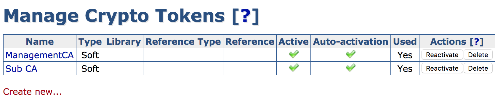
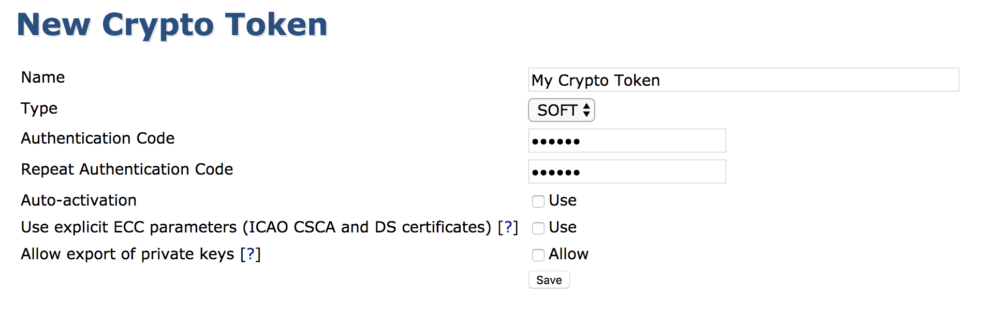
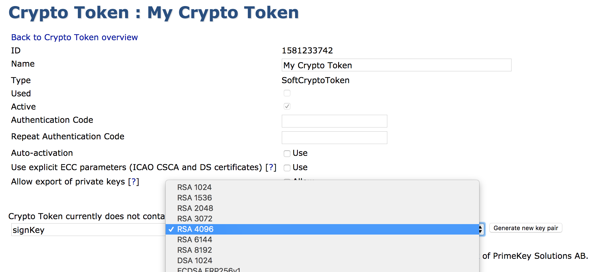

Managing Crypto Tokens
This Crypto Token Operations page provides information on how to manage crypto tokens:
For information about what crypto tokens are, what they do and about their fields, see Crypto Tokens Overview.
The EJBCA Administration menu option Crypto Tokens displays the Manage Crypto Tokens page. In addition, crypto tokens can be activated from the CA Activation page.
Managing Crypto Tokens from the CA UI
Creating a Crypto Token
To create a crypto token, select the Crypto Tokens menu option to display the Manage Crypto Tokens page, and click Create new at the bottom of the page.

In the appearing creation screen, select the token type and specify the password and other options. For a list of available crypto token fields, see Crypto Tokens Overview.

In EJBCA Enterprise Edition, you can also create new Crypto Tokens using the WS API call createCryptoToken in your application or with the Web Service Interface.
View or Edit a Crypto Token
This view is similar to the creation of a token except for showing the ID and activation status. The view allows changing values such as the name or auto-activation status.
Note that it is not possible to change the crypto token ID or type.
Key management
While viewing an active Crypto Token, you can also view and interact with the Crypto Token's keys. The shown SubjectKeyID column is a SHA1 over the public key.

A new key pair can be created by giving it an alias, a key specification and clicking Generate.
Key pairs can be removed by clicking Remove for the specific key pair or selecting multiple keys and clicking Remove selected.
A key pair can be tested by clicking Test for the specific key pair.
A key pair's public key can be downloaded in PEM format by clicking Download Public Key.
Note that the shown key specifications might not be supported by underlying PKCS#11 modules. If attempting to use such a key specification, an error will be shown.
In EJBCA Enterprise Edition, you can also generate new keys by using the WS API call generateCryptoTokenKeys in your application or with the Web Services CLI.
Activation and Deactivation
The following actions are available in the Crypto Token list:
|
Action |
Description |
|
Activate |
Enter an authentication code and click Activate to activate an inactive Crypto Token. |
|
Deactivate |
Deactivates an active Crypto Token. |
|
Reactivate |
Reactivates an active Crypto Token with Auto-activation enabled. |
Managing Crypto Tokens from the CLI
Nearly all functionality concerning crypto tokens is mirrored in the command line using the following command:
$ bin/ejbca.sh cryptotoken